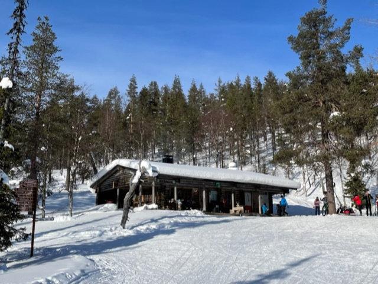

Kotamaja – Legendaarinen Kahvila
Ylläksen sydämessä sijaitseva Kotamaja on paljon enemmän kuin vain kahvila. Se on elämys, joka jää mieleen. Jo vuosikymmenten ajan Kotamaja on tarjonnut vierailijoilleen lämpimän ja kutsuvan paikan rentoutua, nauttia herkullisista leivonnaisista ja ihailla henkeäsalpaavia tunturimaisemia.
Mikä tekee Kotamajasta erityisen?
- Ainutlaatuinen tunnelma: Kotamajan kodikas sisustus ja perinteinen lappilainen tyyli luovat viihtyisän ilmapiirin, jossa jokainen vieras tuntee olonsa tervetulleeksi.
- Herkulliset tarjoilut: Valikoimasta löytyy suussa sulavia leivonnaisia, tuoreita voileipiä ja tietenkin perinteistä lappilaista poronkäristystä. Kaikki valmistetaan rakkaudella ja paikallisista raaka-aineista.
- Upeat maisemat:Kotamaja sijaitsee keskellä Ylläksen kauneinta luontoa. Ikkunoista avautuvat näkymät tuntureille ja metsille, jotka tarjoavat täydellisen taustan rentoutumiselle.
- Aktiviteetit ympäri vuoden: Olitpa sitten hiihtämässä, vaeltamassa tai vain nauttimassa luonnon rauhasta, Kotamaja on täydellinen taukopaikka. Talvella voi lämmitellä takkatulen ääressä ja kesällä nauttia terassin auringosta.
Koe Kotamajan taika osana Ylläksen elämyksiä!
Ylläksellä on paljon tarjottavaa ja Kotamaja on yksi niistä paikoista, jotka tekevät vierailusta erityisen. Tule ja koe itse, miksi Kotamaja on Ylläksen rakastetuin kahvila.